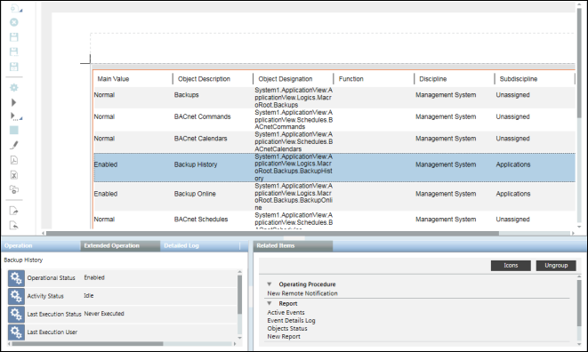

Working with Report Tables
You can perform the following operations on tables in reports.
Customize a Column Header
You can customize the column heading in tables as per your requirement using the Select Columns dialog box.
These customized headings appear in the report definition and also in the generated report output.
In case of Trends table, in addition to customizing the column headings, you can also customize the column header for the trended objects hierarchy from
the Trended Objects tab in the Select Columns dialog box.
Perform the following steps to customize a column header.
- You have added the table whose column headers are to be customized to the report definition.
- You have selected the columns to be displayed in the table.
- Select the table in the report definition.
- Right-click and select Select Columns.
- The Select Columns dialog box displays.
- In the Selected Columns section, select the column whose header is to be customized.
- Double-click the column header or press F2 to enter a new column header.
- The modified column header displays in the table in the report definition.
NOTE: When you modify a column header for the first time, the same name displays as the header in all the languages configured in your system.
On subsequent edits, the name is updated for only the default language in which you are currently logged in.
Sort a Column
- You have added a table with multiple columns to a report definition.
- Do one of the following:
- To sort a column data in ascending order, click the column header of a table.
- To change the sort order to descending, click the same column header again.
- To sort the data on multiple columns, press CTRL and click the column headers.
NOTE: Remove the priority of the prioritized columns for multiple sorted columns by single clicking any column header.
- The data is sorted, and a priority is assigned to the columns if sorting is done on more than one column.
Work with the Comments Table in Run Mode
- The report displays in Run mode and has a comments table.
- Perform either of the following activities to add, modify, or delete entries from the table.
- Adding a new entry: Enter the comments in the Comments column and press ENTER. Press ALT + ENTER to add a new line.
The Creation date, User and Management Station columns are automatically filled in with their respective read-only values. - Modifying an entry: Click Edit
 next to the row with your comments to make it editable.
next to the row with your comments to make it editable.
Perform the required updates and press ENTER to update the comments. You can edit only your own comments. - Deleting an entry: Click Delete
 next to the row with your comments.
next to the row with your comments.
Select Rows in Tables
- Select a single or multiple rows in a reports table in the Run mode.
- The information of the object or objects in the selected row or rows displays in the Extended Operation tab.
Additionally, any related items of the objects also display in the Related Items tab. In Trends tables, you can select only a one cell and the
information of the object in the selected cell displays in the Extended Operation tab.

View Data of Deleted Objects
You can view the data related to deleted objects from the Orphans, Orphan Activities, Orphan Events, and Orphan Trends tables.
This data relates to the activity records, event records, or trend records of deleted objects.
To view these tables, you must enable the View Orphan Logs application right from the Security node in the Management View.
In order to view the data of such objects, perform the following steps:
- Create a new report definition and add the Orphans table to it.
- Add a condition filter to this table and set the value of the Orphan Type column to either of the following
a. Objects
b. Trends - Run the report definition.
- The details of all the deleted objects displays.
- Generate an Excel or PDF output by clicking Create and view Excel
 or Create and view PDF
or Create and view PDF  .
.
NOTE: Ensure that Microsoft Excel 2007 or later is installed, for Create and view Excel to be enabled. - Depending on the type of data (Objects or Trends) to be displayed for the deleted objects, perform the following steps:
a. To view activity related information of deleted objects, insert the Orphan Activities table.
b. To view the event related information of deleted objects, insert the Orphan Events table.
c. To view the trended information of deleted objects, insert the Orphan Trends table. - Navigate to the location where you have saved the Excel or PDF file, and then copy the Object Identifier of the deleted object whose data should display.
- Add a condition filter to either the Orphan Activities, Orphan Events, or Orphan Trends tables and set the value of the Object Identifier column to the
value you copied from the generated Excel or PDF file. - Run the report definition.
- The details of the deleted objects display depending on the value of the specified Object Identifier.